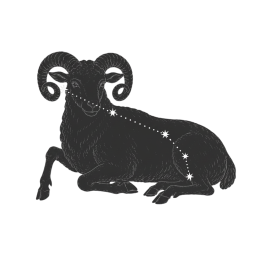

Seasonal Constellation Guide
우주 관측실에서 만나는
계절 별자리
ZODIAC에 오신 것을 환영합니다.
계절 카드를 따라 밤하늘의 대표 별자리를 살펴보고,
별빛 속에 담긴 신화와 이야기를 천천히 탐험해보세요.


Zodiac Signs
Seasonal Constellation Guide
ZODIAC에 오신 것을 환영합니다.
계절 카드를 따라 밤하늘의 대표 별자리를 살펴보고,
별빛 속에 담긴 신화와 이야기를 천천히 탐험해보세요.

Zodiac Signs